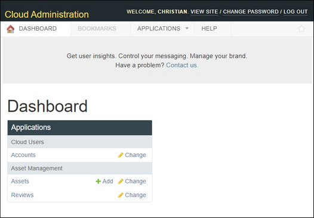

The Administration link opens to the Cloud Administration dashboard.

There are four tabs on the Cloud Administration page:
Dashboard – provides links to editing and user applications.
Bookmarks – provides links to bookmarked pages.
Applications – provides an alternate set of links to Dashboard applications.
Help – opens this user manual.
There are three links in the header:
View Site – click to open the landing page of the current Cloud Portal site, from which you can access the CMS account menu.
Change Password – click to change your CMS account password.
Log Out – click to exit CMS.
There is also a Contact Us link that opens the Network Optix support page in a new browser tab, where you can submit a request for information or technical support.
In the Dashboard
Integration Developers have access to the "Asset Management" application, which includes:
Assets – lets you edit, preview and submit pages for approval.
Reviews – a log of exactly what content changed, and when and by whom updates were approved.
Portal Managers have access to the Asset Management application and also to the "Cloud Users" application, which includes:
Accounts – a list of all registered Cloud account users that can be sorted, searched, and exported.